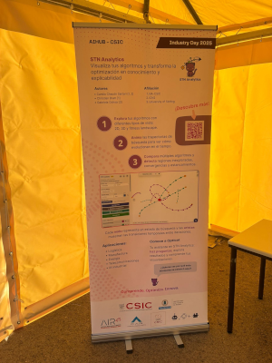
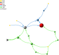
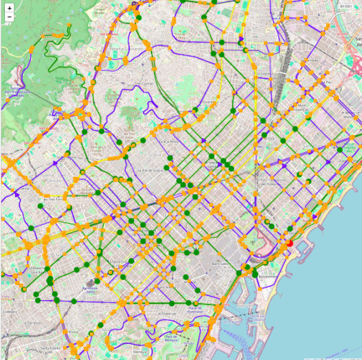
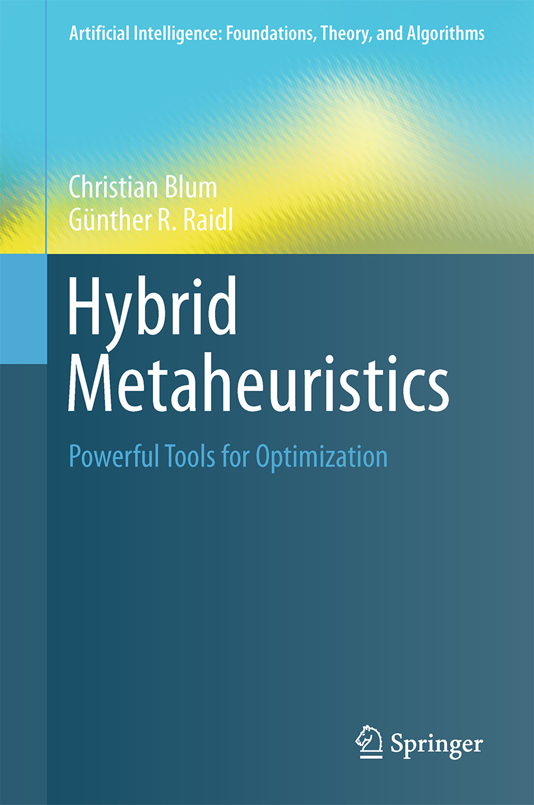
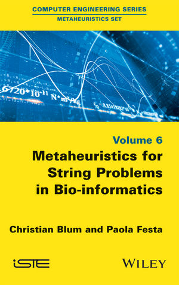

Christian Blum, PhD
Senior Research Scientist
Artificial Intelligence Research Institute (IIIA)
Spanish National Research Council (CSIC)
 ORCID Profile
ORCID Profile

Senior Research Scientist
Artificial Intelligence Research Institute (IIIA)
Spanish National Research Council (CSIC)
Recognized among the top 2% most cited scientists globally
Best Methodological Contribution in Operations Research
Global Ranking: rank 29,519 out of 230,332 researchers in the list
AI & Image Processing: rank 616
Citations: 22,830 (Google Scholar)
H-index: 49 (Google Scholar)
Recent developments and achievements

Camilo Chacón presented STNWeb (3D), our web-based tool for the 3D visual comparison of multiple runs of multiple optimization algorithms (metaheuristics), at the Industry Day of AIHub in Madrid.

We launched our new web application STNWeb (3D) for the 3D visual comparison of multiple runs of multiple optimization algorithms (metaheuristics). The web application comes with a tutorial on how to use it. Feel free to check it out!
Note: The 2D version of STNWeb is still available at here

We launched a new web application called EVRPGen for generating realistic problem instances for several electric vehicle routing problems (EVRPs). Feel free to check it out!
I gave a keynote talk on On the Use of LLMs in Optimization at The 9th Euro-China Conference on Intelligent Data Analysis and Applications (ECC 2025) which took place in Ostrava, Czech Republic.
I gave a keynote talk on Understanding the Behavior of Metaheuristics Through Search Trajectory Visualization at 13th International Conference on Soft Computing for Problem Solving (SocProS 2025) which took place at IIT Roorkee, India.
Key publications in metaheuristics and optimization
In case you need a copy of one of the books, contact me! ()

Springer Publication 2016

Wiley Publication 2016
Serving as area editor, associate editor, or editorial board member